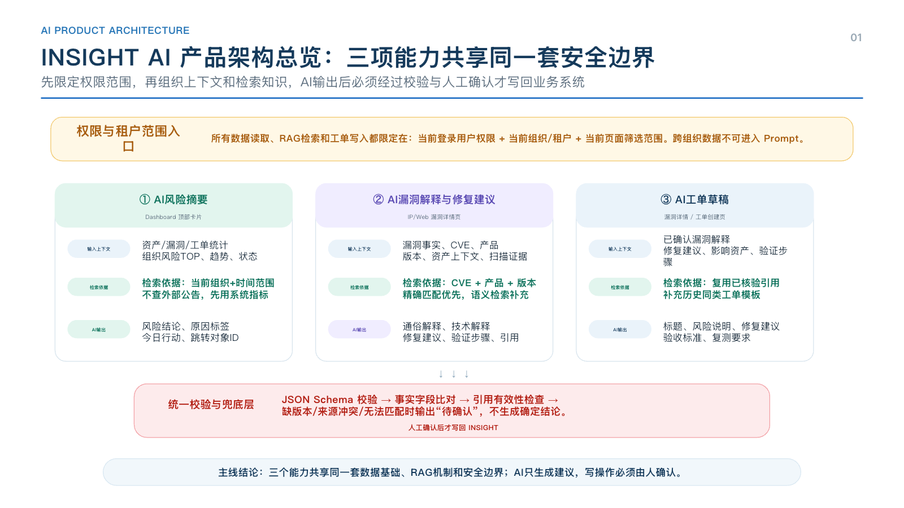
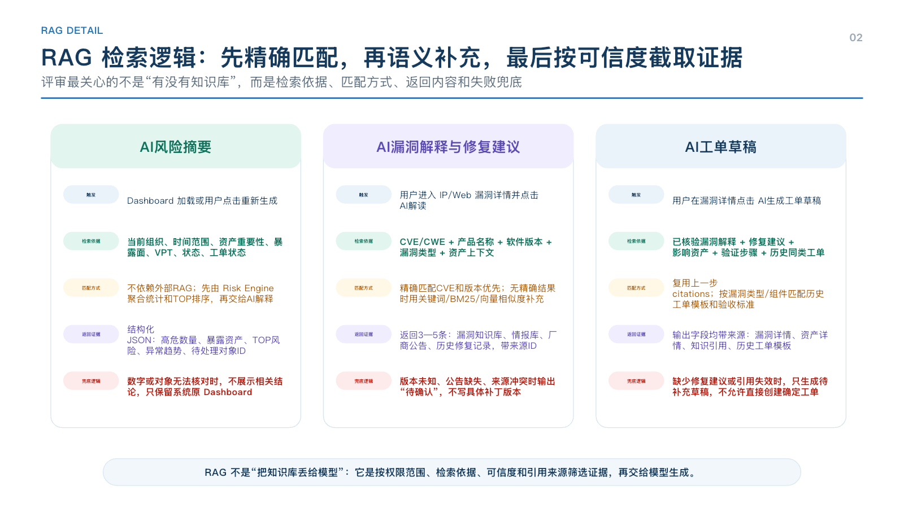
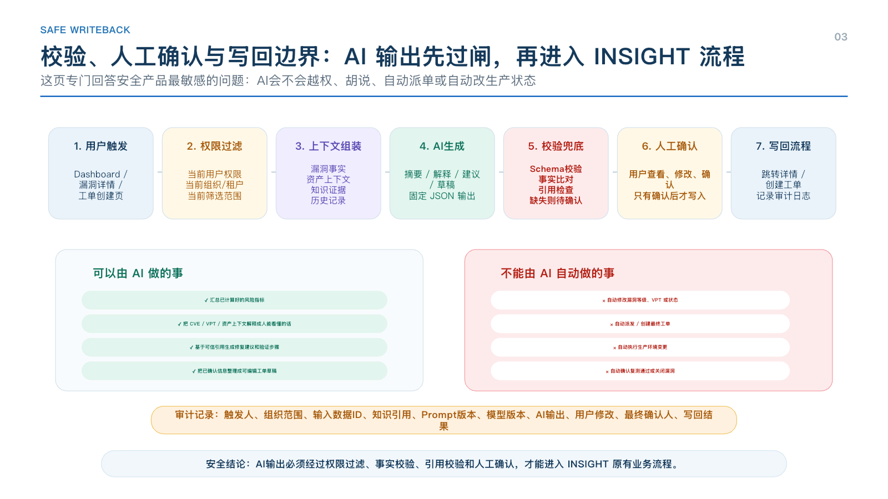

1. 从一个安全运营工作日开始
早上九点，安全负责人打开 INSIGHT。仪表盘上已经有资产数量、漏洞数量、状态分布、风险趋势和组织排名。这些数据能够告诉他“平台中有什么”，但他还需要继续判断：今天最应该关注哪个风险、为什么这个风险比其他风险重要、哪些资产和组织受到影响、今天应该推动什么事情。
过去，他需要在仪表盘、漏洞列表、资产详情、知识库和工单之间来回切换，把零散信息组合成一个判断。AI 风险摘要加入以后，INSIGHT 不再只展示数字。系统首先使用已有数据计算当前风险，再由 AI 将结果组织成一段可读、可追溯、可行动的摘要。
安全负责人点击“查看首要风险”后进入对应漏洞详情。漏洞详情原来已经包含漏洞名称、CVE、VPT、等级、影响资产、来源和当前状态。AI 在这些事实之上补充通俗解释、技术解释和处置建议，帮助用户更快理解风险和形成行动。
确认风险和建议后，用户点击“AI 生成工单草稿”。系统自动整理漏洞信息、风险说明、影响资产、修复建议和复测标准。用户检查内容、按实际情况修改，然后人工确认创建工单。后续仍沿用 INSIGHT 原有流程：相关人员修复，安全人员发起复测，并在确认复测结果后关闭漏洞。
3. AI 产品技术架构
整体架构遵循同一条主线：先限定权限范围，再组织上下文和检索知识，AI 输出后必须经过校验与人工确认才写回业务系统。
3.1 权限与租户边界
所有数据读取、RAG 检索和工单写入都必须限定在当前登录用户权限、当前组织或租户、当前页面筛选范围内。跨组织数据不可进入 Prompt，也不可被用于生成摘要、解释或工单草稿。
- Dashboard 摘要只读取当前组织和时间范围内的资产、漏洞、工单和趋势数据。
- 漏洞解释只读取用户有权限查看的漏洞详情、影响资产、知识库和情报库内容。
- 工单草稿只能使用当前漏洞上下文和已经核验的引用来源，不应跨组织复用敏感处置记录。
3.2 三个能力的输入、检索和输出结构

图 2：INSIGHT AI 产品架构总览
这张架构图强调三个能力共享同一套数据基础、RAG 机制和安全边界。INSIGHT 负责事实、数字、状态和流程；AI 负责把复杂风险翻译成可理解、可行动、可确认的内容。
3.3 RAG 检索逻辑
RAG 不是简单把知识库内容丢给模型，而是按权限范围、检索依据、可信度和引用来源筛选证据，再交给模型生成。不同能力的检索策略不同：
AI风险摘要
主要依赖 Risk Engine 的结构化指标，不优先查外部公告。检索依据包括当前组织、时间范围、资产重要性、暴露面、VPT、状态和工单状态。
AI漏洞解释与修复建议
按 CVE/CWE、产品名称、软件版本、漏洞类型和资产上下文检索。精确匹配 CVE 和版本优先；无精确结果时，用关键词、BM25 或向量相似度补充。
AI工单草稿
复用上一步已经核验的 citations，并按漏洞类型、组件、历史同类工单模板和验收标准补充生成内容。

图 3：RAG 检索逻辑
3.4 校验、人工确认与写回边界
AI 输出不是直接进入业务系统，而是先经过 JSON Schema 校验、事实字段比对、引用有效性检查和缺失信息兜底。缺版本、来源冲突或漏洞与组件无法匹配时，页面应输出“待确认”，不生成确定结论。
写操作必须经过人工确认。用户查看、修改并确认后，系统才调用 INSIGHT 的工单接口或跳转原业务流程；AI 不直接派单、不自动关闭漏洞、不自动修改状态。

图 4：校验、人工确认与写回边界
审计日志机制
至少记录：触发人、组织范围、输入数据 ID、知识引用、Prompt 版本、模型版本、AI 输出、用户修改、最终确认人和写回结果。